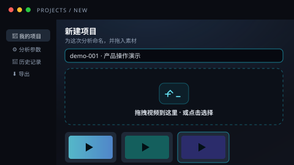
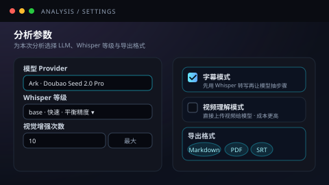
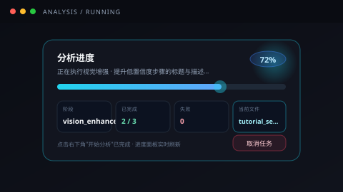
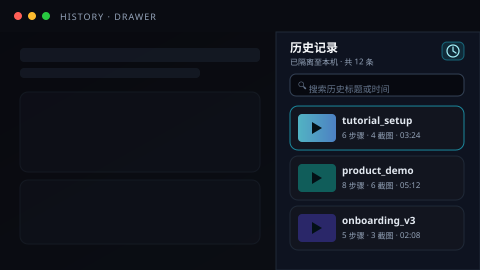
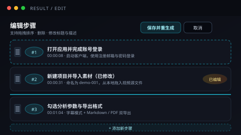

从上传、风控、分析到导出，每一步都为长流程视频做了优化。
本地文件、批量、分片续传与远程链接四路并行；大文件 8MB 一片，断网刷新都能从断点继续传。
指纹黑名单 → 视觉抽帧 → 备用视觉模型 → 关键词词库，逐层校验。上传前与分析前各跑一次，命中即隔离。
标准步骤识别失败会自动退到候选步骤，再退到时间线摘要；置信度低的步骤会再让模型"看图说话"补强。
Whisper 常驻 + CLI 兜底，一键导出 SRT / VTT / TXT；可关键词检索字幕，点哪行视频跳哪行。
AI 输出经过安全清洗再渲染；PDF 自动适配 Windows / Linux 中文字体；结果包内含截图、字幕、原视频与步骤数据。
同一套调用代码自动适配 Ark / OpenAI / DeepSeek / Qwen 等平台；不支持的能力会自动降级到字幕分析路线。
B 站、抖音、小红书有专属解析；通用页面靠浏览器抓取 + 模型识别 + yt-dlp 兜底，多层回退保下载成功率。
无登录系统也能多人共存：每个浏览器独立隔离历史。后台定时回收：上传 24 小时清，输出与历史 72 小时清。
结果支持拖拽排序、改写、增删步骤。保存后会按你编辑后的版本重新生成 Markdown 与 PDF，文档永远跟编辑一致。
React 19 + TypeScript + Vite + Tailwind 4 构建。深色科技感视觉，支持移动性能模式自动降级。
AI 自动分析视频内容，抓取关键截图，拆解核心步骤，输出结构清晰、重点明确的总结文档。
点击选择 · 或拖拽视频到这里
支持 MP4 / AVI / MOV / MKV / WMV / FLV / WebM / M4V 等
处理速度与稳定性最佳
20 分钟 / 250 MB+ 自动进入
90 分钟+ 请拆分
稳定性优先
当前阶段：低置信度步骤视觉增强 · 2/3 文件
视觉增强标题与描述
输出包就绪可下载
超长视频会自动降级
视觉增强 · 第 4/6 步
每一步都做了失败兜底与降级方案；长视频自动压缩切片，违规内容上传前就被拦下，最终交付清晰的文档与历史回看。
本地单文件、批量、分片续传，或粘贴远程视频链接。文件先进入暂存区，等待安全检测。
指纹黑名单 → 视觉抽帧 → 备用视觉模型 → 字幕关键词，逐层校验。命中即拒绝，不会落到正式存储区。
对正式入库的视频再做一次校验，命中违规直接进入隔离目录，并把结果写入缓存避免重复扣费。
按时长 / 体积自动压缩、必要时切片重拼。处理副本独立保存，原始视频不动，超长会自动收紧参数。
Whisper 转写字幕 → 模型抽取步骤；或开启视频理解直分析。失败自动降级为候选步骤或时间线摘要。
为每个步骤抽取关键截图；置信度低的步骤再次让模型"看图说话"，补强标题与描述。
输出 Markdown 操作指南、PDF、步骤 JSON、关键截图，同时一键导出 SRT / VTT / TXT 字幕。
分析结果写入历史抽屉，按浏览器隔离查看。72 小时自动清理，支持单结果或批量打包下载 ZIP。
一份典型的"产品操作演示"分析结果：步骤、截图、Markdown 文档与字幕工作台一站式呈现。
启动客户端后，使用注册邮箱与密码完成首次登录。系统会自动检测并提示绑定多设备，可按需在设置中开启。

进入主面板，点击"新建项目"，命名后从本地或云端拖入视频源文件。左侧预览窗会即时刷新缩略图。

根据视频类型选择"字幕模式"或"视频理解"，并设定 Whisper 等级。导出格式可同时勾选 Markdown / PDF。

点击右下角"开始分析"，进度面板展示当前阶段（上传 / 字幕 / 抽帧 / 视觉增强）。完成后可直接预览或下载 ZIP。

顶部导航点击"历史"打开抽屉，可按时间排序、关键字检索，快速回到任一历史结果。

点击"编辑"进入排序与改写模式，保存后后端按编辑结果重新生成 Markdown 与 PDF，保证文档与编辑一致。
本文档由 Video Insights 自动生成。原视频时长约 03:24，识别 6 个核心操作步骤，附 4 张关键截图。
本视频演示了如何使用客户端从零完成首次项目分析，覆盖账号登录、项目创建、分析参数配置、结果回看与编辑导出五个主要场景。
启动客户端后，使用注册邮箱与密码完成首次登录。系统会自动检测并提示绑定多设备，可按需在设置中开启。
📍 时间点：00:00:08
进入主面板，点击"新建项目"，命名后从本地或云端拖入视频源文件。左侧预览窗会即时刷新缩略图。
📍 时间点：00:00:31
根据视频类型选择"字幕模式"或"视频理解"，并设定 Whisper 等级。导出格式可同时勾选 Markdown / PDF。
📍 时间点：00:01:04
点击右下角"开始分析"，进度面板展示当前阶段（上传 / 字幕 / 抽帧 / 视觉增强）。完成后可直接预览或下载 ZIP。
📍 时间点：00:01:42
2026-05-13 21:54outputs/<video>_<timestamp>/共 132 行 · 匹配 7 行
大家好，今天我们来看一下如何完成首次项目分析的全流程。
登录后第一件事是确认账号信息，然后在右上角开启多设备绑定。
接下来 点击主面板的"新建项目"，命名为 demo-001。
在分析参数面板里，根据视频类型勾选字幕模式或视频理解。
点击开始分析后，进度面板会实时显示当前阶段。
分析结束后，可以在历史抽屉里随时回到这次结果。
如果模型识别有偏差，可以点击编辑按钮手动调整步骤后再保存。
正在执行视觉增强 · 提升低置信度步骤的标题与描述...
阶段：vision_enhance · 第 4/6 步
当前文件：tutorial_setup_walkthrough.mp4
前端 React 19 + TypeScript + Tailwind 4；后端 Flask + Whisper + ffmpeg；多 LLM Provider 路由 + 多层降级。下面同时呈现真实落地的工程化优化点。
前端工作台
React 19 + TypeScript 全量类型化；Tailwind 4 与原生 CSS 变量并存的设计系统。
后端 API 服务
Flask 主框架 + Waitress 生产级 WSGI；分片续传、会话管理、自动清理一应俱全。
视频处理引擎
Whisper 常驻模型转写 + FFmpeg 抽帧 / 压缩 / 切片；长视频自适应预处理。
文档生成
Markdown / PDF / 字幕 / 步骤 JSON 全套输出；中文字体跨平台自适配。
智能链接导入
B 站 / 抖音 / 小红书专属解析；通用页面靠浏览器抓取 + 模型识别 + yt-dlp 多层兜底。
多模型平台路由
能力声明驱动的统一抽象；同一段调用代码自动适配 4 大平台，不支持的能力自动降级。
从前端渲染、网络层、上传链路、长视频处理到 LLM 调用、风控与可观测性，每一处都做了真实的取舍与回退方案。